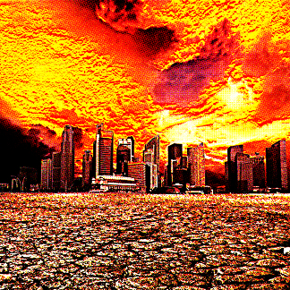
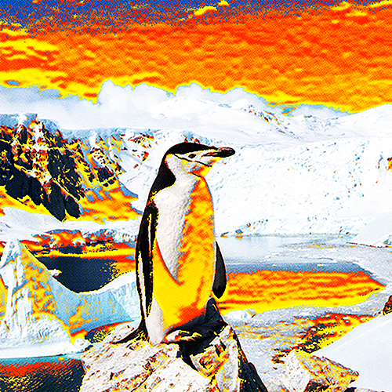
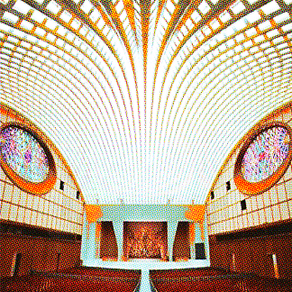

Главная
Статьи
Бытие
Космос
Прошлое
Карта истинной Земли
Предсказание дня
Отмена
← Назад
↑
Бытие
← Бытие
Адренохром — эликсир вечной молодости знаменитостей
Что скрывается за этим веществом, которое связывают с элитой и тайными обрядами? После этой статьи вы точно пересмотрите своё мнение о звёздах Голливуда!
28.05.25
Читать в источнике →

10 прогнозов для мира в 2030 году
2030: случайность или план элит? Тайные договорённости, цифровой контроль, кризисы и трансгуманизм — 10 прогнозов, которые могут стать реальностью.
28.05.25
Читать в источнике →

Антарктиды не существует
Антарктида — континент или тщательно охраняемая тайна? Запрет на полёты, скрытые базы и аномалии — что мировые элиты не хотят нам показывать?
??.??.25
Читать в источнике →

Голова змеи Ватикана
Ватикан — духовный центр или храм тьмы? Тайные символы, змеиная архитектура и скрытые знания — что на самом деле скрывается за фасадом веры?
??.??.25
Читать в источнике →
t.me/schizofiles ↗
О проекте
schizofiles.ru
2025